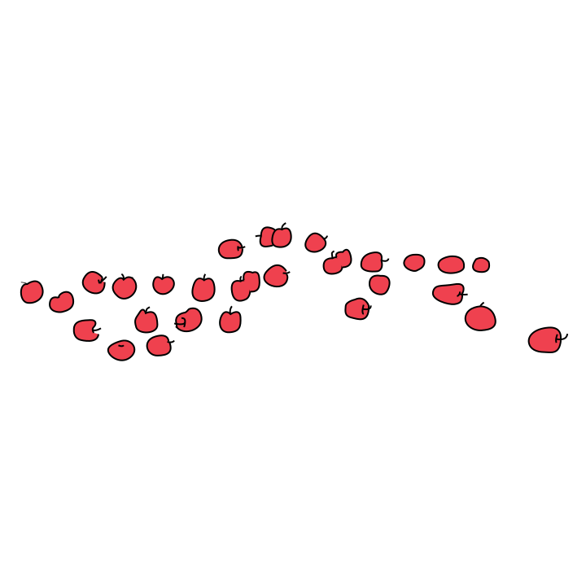

Once there was a tree...
and she loved a little boy.
And every day the boy would come
and he would gather her leaves
And make them into crowns and play king of the forest.
He would climb up her trunk
and swing from her branches
and eat apples.
And they would play hide and go seek
And when he was tired, he would sleep in her shade.
And the boy loved the tree very much.
And the tree was happy.
But time went by,
And the boy grew older.
And the tree was often alone.
Then one day the boy
came to the tree
and the tree said:
"Come, Boy, come and climb up my trunk
and swing from my branches
and eat apples and play in my shade
and be happy."
"I am too big to climb and play," said the boy.
"I want to buy things and have fun.
I want some money.
Can you give me some money?"
"I'm sorry," said the tree,
"but I have no money. I have only leaves and apples.
Take my apples, Boy, and sell them in the city.
Then you will have money and you will be happy."
And so the boy climbed up the tree
and gathered her apples
and carried them away.
And the tree was happy...
But the boy stayed away for a long time...
and the tree was sad.
And then one day the boy came back,
and the tree shook with joy and she said,
"Come, Boy, climb up my trunk
and swing from my branches
and be happy."

"I am too busy to climb trees,"said the boy.
"I want a house to keep me warm," he said.
"I want a wife and I want children, and so I need a house.
Can you give me a house?"
"I have no house," said the tree.
"The forest is my house,
but you may cut off my branches and build a house.
Then you will be happy."
And so the boy cut off her branches
and carried them away to build his house.
And the tree was happy...
But the boy stayed away for a long time.
And when he came back, the tree was so happy she could hardly speak.
"Come, Boy," she whispered,
"come and play."
"I am too old and sad to play, said the boy.
"I want a boat that will take me far away from here.
Can you give me a boat?"
"Cut down my trunk and make a boat," said the tree.
"Then you can sail away...
and be happy."
And so the boy cut down her trunk
and made a boat and sailed away.
And the tree was happy... but not really
And after a long time
the boy came back again.
"I am sorry, Boy," said the tree,
"but I have nothing left to give you,
my apples are gone."
"My teeth are too weak for apples,"
said the boy.
"My branches are gone," said the tree.
"You cannot swing on them."
"I am too old to swing on branches,"
said the boy.
"My trunk is gone," said the tree.
"You cannot climb."
"I am too tired to climb,"
said the boy.
"I am sorry," sighed the tree.
"I wish that I could give you something...
But I have nothing left.
I am just an old stump.
I am sorry..."
"I don't need very much now," said the boy,
"just a quiet place to sit and rest.
I am very tired."
"Well," said the tree,
straightening herself up as far as she could,
"well, an old stump is good for sitting and resting.
Come, Boy, sit down. Sit down and rest."
And the boy did.
And the tree was happy...
The End